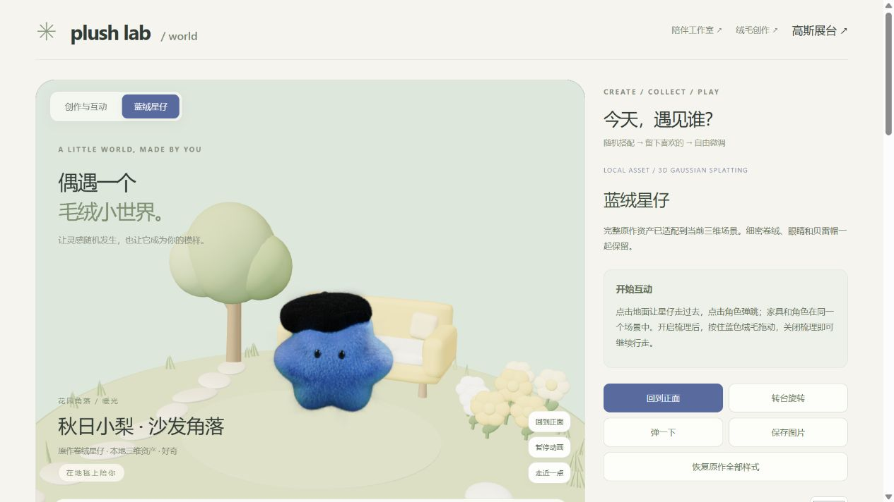
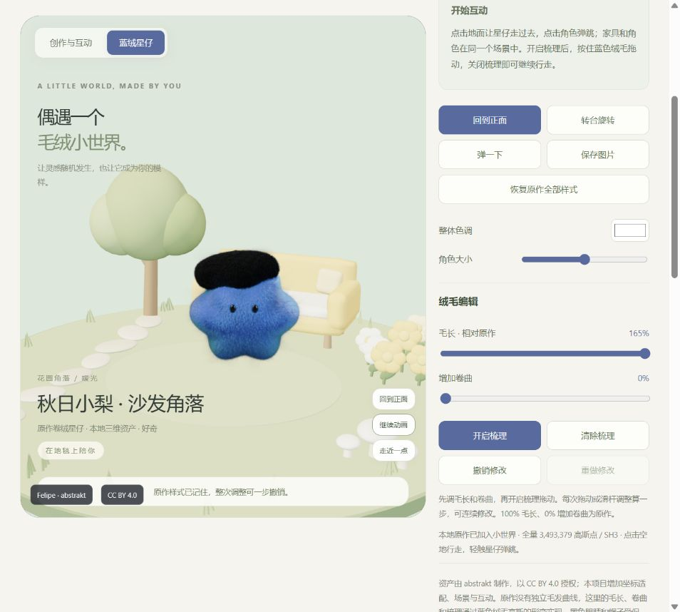
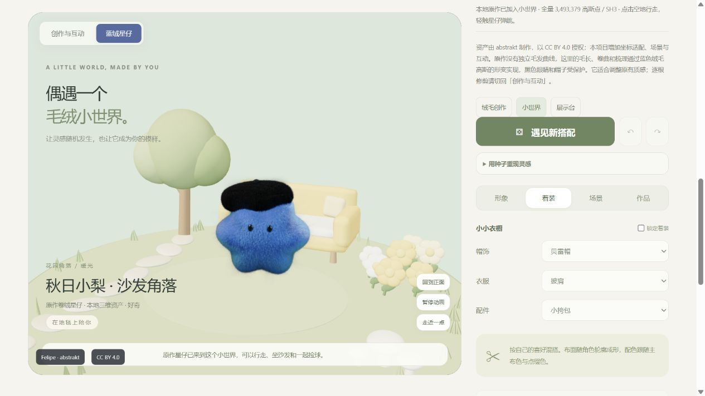
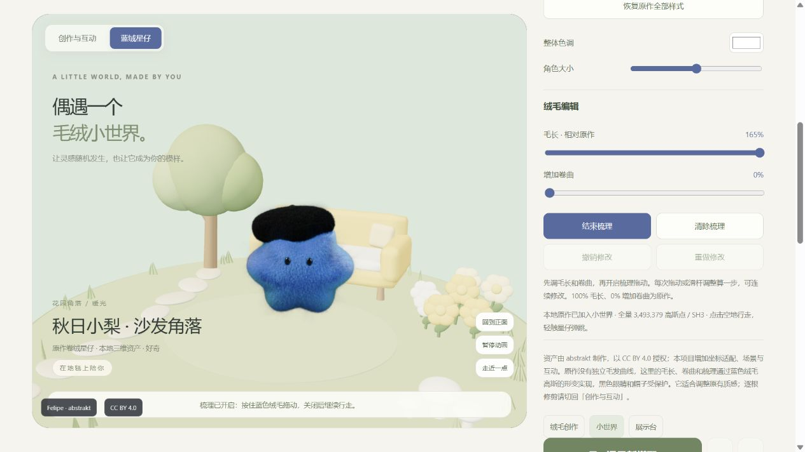
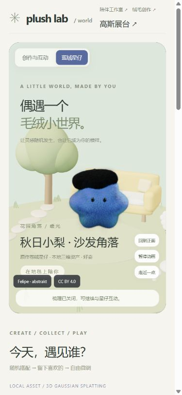
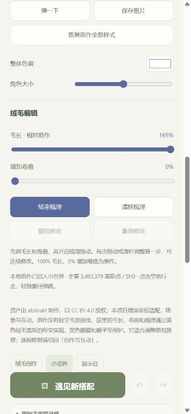
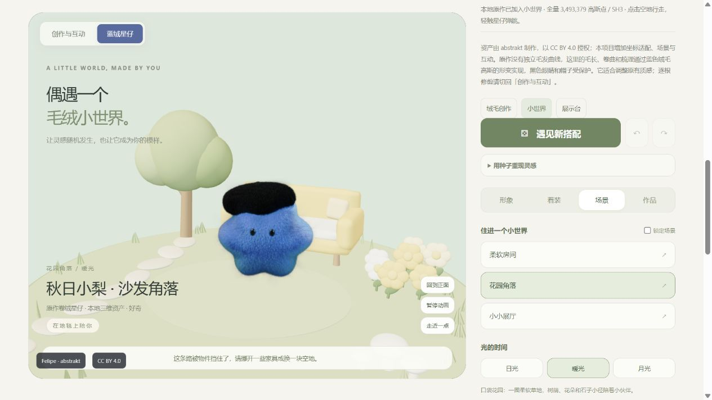
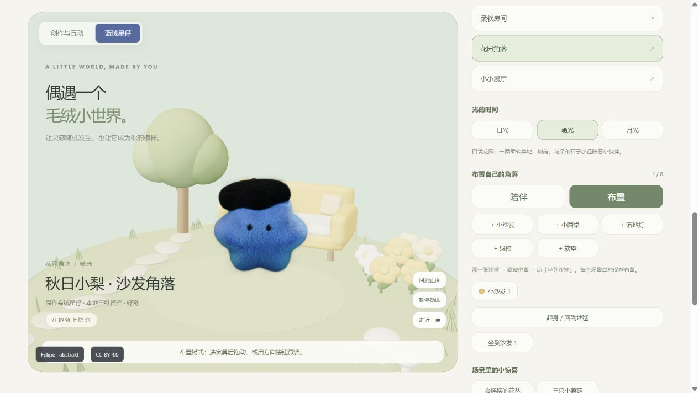
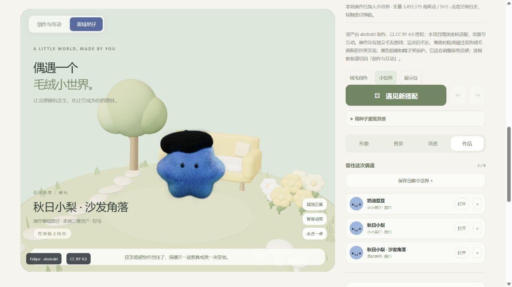

完整项目总览已新增
前面的全部探索与目标毛绒，汇总在项目全景
涵盖绒毛创作、小世界、陪伴与 Agent、论文方法、Cycles 实验和原作接入，并可直接旋转观察目标毛绒的本地 3D 资产。当前这份页面审查作为其中一章保留。
打开完整项目全景与目标毛绒 ↗
PLUSH WORLD / CURRENT PAGE AUDIT / 2026-10-03
毛绒小世界：先把编辑流程接顺
页面已经有原作角色、场景布置和陪伴入口。当前主要问题是两套创作面板并列堆叠，以及编辑模式、收藏和导入边界没有完全适配原作资产。
本轮对象：world.html 的「蓝绒星仔」模式，用户当前作品「秋日小梨 · 沙发角落」，毛长 165%、增加卷曲 0%。截图、DOM 检查与代码核查均来自本轮。未修改毛长、卷曲、梳理内容、家具或收藏。
P2 · 需要整理1. 进入页面：主要操作埋在长面板中
左侧能看到角色与花园，桌面滚动时预览保持可见，这是有效的基础。右侧先显示资产介绍和互动说明，再显示毛长、卷曲，后面才出现「形象 / 着装 / 场景 / 作品」。两个面板都有撤销、重做；回到正面和跳跃也有多个入口。
影响：用户难以分辨哪些控制作用于星仔，哪些作用于原来的自由创作角色；为了找场景或收藏，需要越过整段角色编辑面板。
建议：统一为「角色、绒毛、场景、互动、作品」任务入口；同一任务只保留一套主要操作。资产来源和实现说明收进可展开的说明区，保留清晰的署名入口。

截图 02：当前入口布局。绒毛控制在右侧下方，后续场景与作品入口更深。
查看用户当前编辑视图

截图 01：毛长 165% 的当前状态；两套面板继续向下堆叠。2. 形象与着装：显示了星仔未使用的参数
切换到着装后，下拉菜单被禁用，却显示「披肩」「小挎包」等原生角色配置。画面中的星仔只有原作黑帽，这些衣服和配件未被渲染。帮助文案仍说下拉菜单「始终支持手动修改」。形象页的形体、材质也保留了禁用的旧选项。
建议：原作模式直接显示实际能力：「固定原作形体与帽子；支持整体调色、绒毛调整和场景布置」。旧角色配置应在切回自由创作后展示，避免造成星仔已经穿着这些衣服的印象。
代码确认 · 未点击随机按钮「遇见新搭配」仍会更改隐藏的原生形体、材质和衣橱，尽管星仔外观保留。之后切回自由创作，之前的配置可能已被替换。建议原作模式仅随机当前可见的场景、配色和性格，并独立保留旧角色配置。
代码确认 · 未点击配色按钮原作应用配色只更新场景色，但选中判定还比较未更新的毛色，导致已应用配色通常没有选中标记。应按当前资产实际支持的字段判定。
代码：world-main.js 第 119、127、132–144 行；world-config.js 第 97–122 行；world.html 第 44 行。

截图 03：画面中的衣着与菜单中保留的旧配置不一致。
P2 · 编辑反馈不足3. 绒毛编辑：能进入梳理，但难判断作用位置
开启梳理后按钮会变为「结束梳理」，场景也有模式提示，基础状态反馈存在。但笔刷只有十字光标，没有显示半径、命中位置或保护区域；半径在代码中固定。角色在全景中较小，细微毛绒变化不易判断。
建议：进入绒毛编辑时自动给出可返回的近景；增加表面笔刷圆圈、命中 / 空白 / 眼帽保护区反馈、笔刷粗细控制。提供按住查看原作的同机位对比，帮助用户看清修改。
需要明确的能力边界：这里的毛长和卷曲调整原有高斯的尺寸、位置和方向，不是连续毛发曲线。165% 表示最长轴的比例，并不等于可见轮廓毛长增加 65%。应在控制旁给出简短解释。当前没有做同机位 100% / 165% 对比，不能据此判定滑杆无效。
「逐根修剪请切回创作与互动」的提示也不准确：world.html 的原生角色面板没有逐根修剪工具，应跳转到真正提供该工具的绒毛创作页。
代码：reference-plush-brush.js 第 9、124、165–177 行；reference-plush-fur.js 第 134–142 行；plush-reference-view.js 第 32–48 行。

截图 04：梳理模式已开启，当前仍为全景构图。
P1 · 核心编辑流程受阻4. 窄屏编辑：控制和角色无法同时看到
390 × 844 的测试视口中，预览和面板改为上下排列。滚到「结束梳理」时，画布的底边已经在视口上方约 509 像素；用户只能看到控制，角色完全离开屏幕。没有横向溢出，但上下切换破坏了实时编辑流程。
建议：编辑模式固定一个紧凑预览，下方使用可滚动控制面板或底部抽屉；把介绍文字折叠。进入梳理后让预览占主要空间，工具条保持可达。退出编辑再恢复完整小世界。

截图 05：窄屏入口能看到角色。
截图 06：开启梳理后控制可见，角色预览完全不可见。这是响应式视口检查；尚未在真实手机上验证触摸、GPU 性能或浏览器滚动行为。
P1 · 模式冲突5. 场景布置：梳理与布置可以同时开启
本轮界面复现：开启梳理 → 切到场景 → 点击布置。DOM 同时显示 data-plush-grooming="true" 和布置按钮 aria-pressed="true"，画布也带有布置模式类名。
代码确认：切到布置不会关闭梳理；梳理监听器在捕获阶段拦截指针事件。因此该顺序下家具拖动事件会被拦截。反向进入梳理又只更新内部布置变量，没有及时刷新布置按钮状态。本轮未实际拖动家具，以保留用户布局。
建议：旋转、梳理、布置和选落点采用统一且互斥的模式管理。切换后同步按钮、画布光标和状态文案；退出入口应始终可见。
保留家具有方向按钮等替代操作；场景物件也提供按钮入口。这些比仅支持画布点击更容易操作。
渲染机制确认 · 视觉差异待对比日光 / 暖光 / 月光改变场景灯光，但原作高斯保留捕获的颜色，不会像家具一样自动响应这些灯。建议后续做角色曝光、色温和接地阴影适配；本轮未切换时段，不能把融合差异当作已复现的视觉故障。
代码：world-main.js 第 208–225、426–428、613 行；reference-plush-brush.js 第 108–109、165–168 行。

截图 07：场景面板的入口与控制。截图中的挡路提示来自本轮一次点击，并未用于判定路径算法问题。
查看模式冲突时的布置界面

截图 09：布置已选中；同时开启的梳理状态由本轮 DOM 读取确认。6. 保存与导入：长度上限没有跟上梳理数据
页面导入框最多允许 22,000 字符，编码器却允许 131,072 字符。本轮用当前纯编码 / 解码函数构造 1,344 个合法梳理格子，生成 49,298 字符代码，并成功解码回全部格子；这段代码超过导入框上限，粘贴无法完整保留。
建议：统一编码器和导入输入的边界，计入完整 URL 的额外长度；增加 JSON 文件导入导出，长作品不只依赖地址栏。验证「生成 → 导入 → 恢复」完整往返。
P2 · 收藏辨识与容量收藏卡片按原生 shape / furColor / outfit 生成图标与说明，原作星仔作品也会显示并未穿着的围巾或披肩。重复保存同一状态每次占一个名额，最多八件很容易被重复项填满。建议使用实际资产名称或缩略图，并提供更新当前作品、另存为和重复提示。
保留页面明确说明收藏只在当前浏览器保存，并说明本机地址的分享限制；应继续保留这种说明。
代码：world.html 第 71 行；world-config.js 第 27、131–139 行；world-main.js 第 547、557、571–573 行。纯函数检查结果见 evidence.json。

截图 08：本轮只查看已有三件收藏；没有新增、打开或移除作品。卡片描述问题另外由当前渲染代码确认。
P2 · 可读性与可访问性贯穿流程的问题
- 说明文字太小、太淡：部分帮助文字为 10px，计算样式前景色 #8d967e、背景 #f6f4ee，估算对比约 2.81:1。建议正文说明提升至 13–14px 并加深颜色，尤其是模式和保存限制。
- 触控目标偏小：窄屏画布侧边按钮约 53 × 28px，建议把常用动作的有效触控区域提高到约 44px 高，减少误触。
- 读数语义不完整：毛长滑杆实际值是 1.65，视觉读数是 165%，没有百分比 aria-valuetext，output 也未与输入关联。建议播报「原作毛长的 165%」。
- 梳理缺少键盘替代：当前绘制只监听指针。建议提供方向预设、强度控制与明确的键盘退出方式；画布说明应跟随当前模式更新，而非一直列出所有手势。
这些是 DOM、样式和代码层面发现；没有做屏幕阅读器或完整键盘流程测试，不代表已经完成可访问性合规检查。
建议修复顺序与验收条件
| 顺序 | 具体工作 | 完成标准 |
|---|
| 1 | 梳理 / 布置 / 陪伴模式互斥 | 任意切换顺序都只有一个操作模式；家具拖动、梳理和选落点各自可用。 |
| 2 | 作品导入边界统一 | 合法完整梳理作品可从生成代码重新导入，数据与姿态一致。 |
| 3 | 窄屏编辑布局与笔刷反馈 | 控制与预览同时可见；用户能判断笔刷位置、范围和是否命中。 |
| 4 | 统一面板与原作能力提示 | 菜单只展示当前可用能力；随机不更改隐藏旧角色；没有重复主要操作。 |
| 5 | 收藏、配色状态和可读性 | 缩略信息匹配实际资产，重复保存不意外占满名额，选择和读数清楚。 |
| 6 | 角色与场景的视觉融合 | 在同机位切换日光 / 暖光 / 月光对比后，角色曝光和接地关系协调。 |
本轮只分析当前小世界页面。绒毛创作页、展示台、AI 陪伴流程、真实手机性能和整体视觉保真度未纳入本轮验证。所有临时视口和模式已恢复，原有资产、作品与收藏保留。